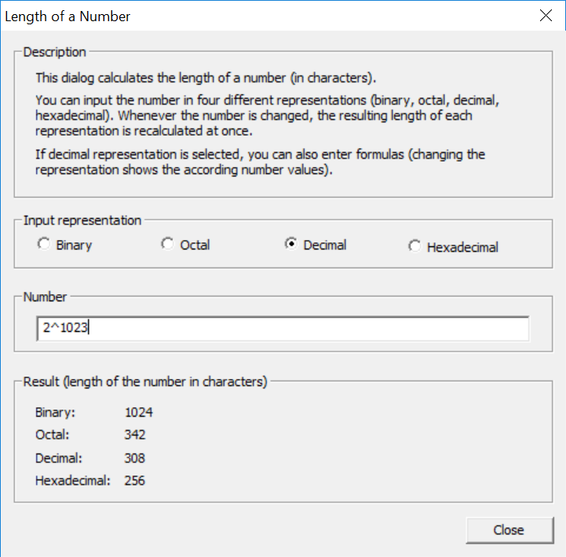

You can reach this dialog using the menu entry Individual Procedures \ Tools \ Length of a Number.
With this dialog you can calculate the length of numbers (in characters) in different representations.

When you enter or change a number, the length of the entered number in the different representations will automatically be updated.
If decimal representation is selected, you can also enter formulas. Examples for valid formulas are the following:
Remark: CrypTool can process numbers up to a bit length of 8192 (2467 decimal characters). Thus formulas like 8^9000 or 10^2500 are invalid.